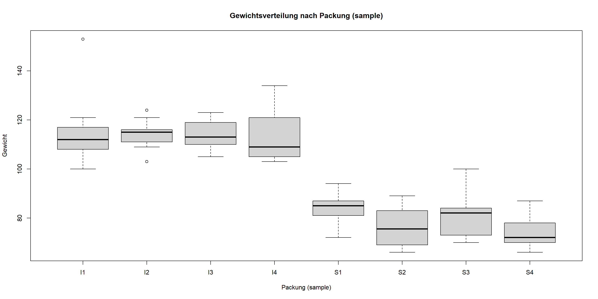

Werte sind bekannt, können aber keiner festen Behandlung zugeordnet werden.
Das Interesse gilt nur der Varianz (\(\sigma^2\)) zwischen den Gruppen, nicht dem spezifischen Effekt jeder Gruppe.
Typische Anwendungsfälle
Pseudoreplikate: Wiederholte Messungen am gleichen Subjekt oder in derselben räumlichen Einheit.
Hierarchische Daten: Daten sind verschachtelt (z.B. Pflanzen in Plots, Plots in Feldern).
Warum LMMs verwenden?
Korrekte Standardfehler: Berücksichtigen Abhängigkeiten (Korrelationen) in den Daten, was zu validen p-Werten und Konfidenzintervallen führt.
Pseudoreplikation: Sie bieten die korrekte Methode, um hierarchische Daten zu analysieren und das Problem der Pseudoreplikation zu lösen.
Parsimonie: Sie verwenden weniger Parameter als herkömmliche Modelle, da sie nur die Varianz der Zufallseffekte schätzen und nicht deren individuelle Mittelwerte.
Hinweis zur Komplexität
Die dahinter liegende Statistik und die Philosophie der Modellspezifikation sind komplex. Deshalb soll hier nur ein einfaches Beispiel zur Veranschaulichung des Grundprinzips der Varianzzerlegung vorgestellt werden.
Wie unterscheiden sich die Früchte
Gibt es einen signifikanten Unterschied im Gewicht von Clementinen aus zwei verschiedenen Marken-Kategorien (‘organic’ vs. ‘standard’)?
Das Problem der Pseudoreplikation
Die Früchte stammen nicht aus einer zufälligen repräsentativen Stichprobe, sondern wurden als Abpackungen (sample) gekauft.
Beobachtung: Jede Packung (z.B. S1, I2, S4) enthält mehrere Früchte.
Abhängigkeit: Die Früchte innerhalb einer Packung sind eventuell ähnlicher zueinander als Früchte aus verschiedenen Abpackungen (z.B. aufgrund der Sortierung und Lagerung).
Die Forschungsfrage mit LMM:
Gibt es einen Effekt der Marke (brand) auf das Fruchtgewicht (weight)? (Fester Effekt)
Wie groß ist die Variation zwischen den einzelnen Packungen (sample)? (Zufälliger Effekt)
Wir verwenden ein LMM, um den Effekt der Marke zu schätzen und gleichzeitig die Chargen-Variabilität statistisch zu kontrollieren.
Der Datensatz
Der Datensatz clem, enthält die Messungen von 74 einzelnen Clementinen.
Der Boxplot zeigt die Verteilung des Gewichts (weight) pro Packung (sample).
boxplot(weight ~ sample, data = clem,main ="Gewichtsverteilung nach Packung (sample)",xlab ="Packung (sample)", ylab ="Gewicht")

Fitten des LMM (lmer)
Wir modellieren das Gewicht (weight) als Funktion des Marken-Effekts (brand), wobei wir die Variation der Achsenabschnitte pro Charge (sample) als zufällig annehmen.
Wir schätzen \(\sigma^2_{\text{Residuum}}\), die verbleibende Varianz innerhalb der Chargen.
Prüfung der Modellannahmen (Diagnostik)
Zur Prüfung der Modellannahmen verwenden wir die Funktion check_model() aus dem Paket performance(Lüdecke et al., 2021), die alle wichtigen diagnostischen Plots generiert.
Wenn das Paket lmerTest(Kuznetsova et al., 2017) verwendet wird, erhalten wir eine ANOVA-Tabelle mit p-Werten für die festen Effekte:
library("lmerTest")anova(lmm)
Type III Analysis of Variance Table with Satterthwaite's method
Sum Sq Mean Sq NumDF DenDF F value Pr(>F)
brand 18437 18437 1 6.2111 217.16 4.579e-06 ***
---
Signif. codes: 0 '***' 0.001 '**' 0.01 '*' 0.05 '.' 0.1 ' ' 1
Zur Anwendung solcher Signifikanztests gibt es bei statisikern unterschiedliche Auffassungen. Im vorliegenden fall ist es jedoch viel einfacher als andere Verfahren.
Bei komplexeren Modellen verwendet man stattdessen besser eine AIC-basierte Modellselektion.
Interpretation: Der resultierende p-Wert zeigt, ob der Effekt der Marke (brand) auf das Gewicht statistisch signifikant ist, nachdem die Variation durch die Chargen kontrolliert wurde.
Zum Weiterlesen und Vertiefen
Das hier vorgestellte lineare gemischte Modell ist nur ein erster Anfang. Für eine umfassende Vertiefung wird empfohlen:
Der R News-Artikel von Bates (2005). Er bietet eine klare Einführung in die Grundkonzepte des lme4-Pakets und enthält mehrere einfache, leicht verständliche Beispiele zur Anwendung.
Das Buch von Pinheiro & Bates (2000) ist der theoretische Standard für gemischte Modelle in R. Es legt dieGrundlage für das ältere, aber nach wie vor wichtige nlme-Paket.
Das Buch von Zuur et al. (2009) ist ein praxisorientierter Leitfaden zur Anwendung in der Ökologie und die beste Quelle für die Themen Modellselektion und -validierung.
Für eine moderne Sichtweise auf die Ökologische Statistik gibt der Sammelband von Fox et al. (2015) eine hervorragende Übersicht. Er verbindet aktuelle Theorie und praktische Anwendung in der ökologischen Forschung.
Literaturverzeichnis
Bates, D. (2005). Fitting linear mixed models in r. R News, 5(1), 27–30.
Bates, D., Mächler, M., Bolker, B., & Walker, S. (2015). Fitting linear mixed-effects models using lme4. Journal of Statistical Software, 67(1), 1–48. https://doi.org/10.18637/jss.v067.i01
Fox, G. A., Negrete-Yankelevich, S., & Sosa, V. J. (Eds.). (2015). Ecological statistics: Contemporary theory and application. Oxford University Press.
Kuznetsova, A., Brockhoff, P. B., & Christensen, R. H. B. (2017). lmerTest package: Tests in linear mixed effects models. Journal of Statistical Software, 82(13), 1–26. https://doi.org/10.18637/jss.v082.i13
Lüdecke, D., Ben-Shachar, M. S., Patil, I., Waggoner, P., & Makowski, D. (2021). performance: An R package for assessment, comparison and testing of statistical models. Journal of Open Source Software, 6(60), 3139. https://doi.org/10.21105/joss.03139
Pinheiro, J. C., & Bates, D. M. (2000). Mixed-effects models in s and s-PLUS. Springer.
Zuur, A. F., Ieno, E. N., Walker, N., Saveliev, A. A., & Smith, G. M. (2009). Mixed effects models and extensions in ecology with r. Springer.